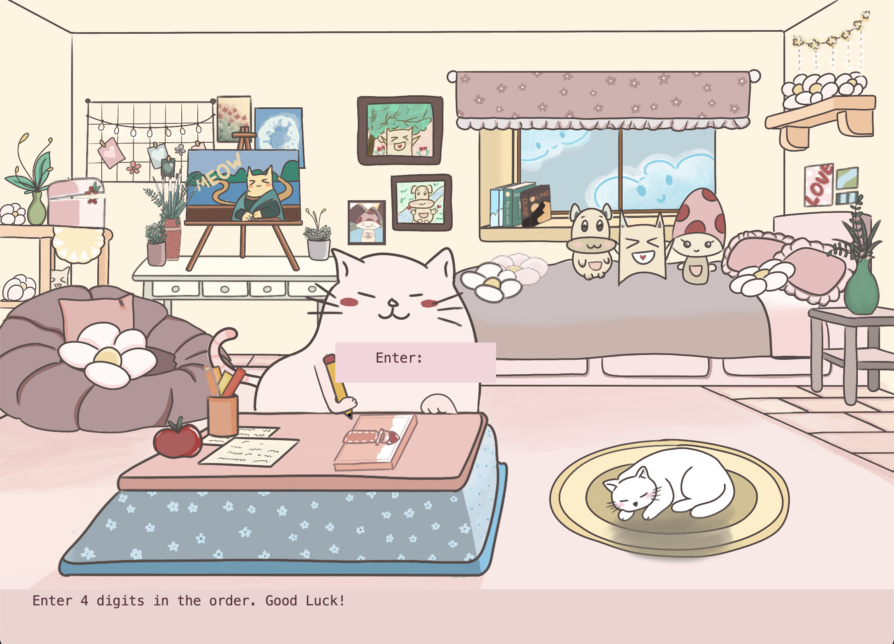

Puzzle Exploration
Game Redesign

Forgotten Pages is a third-person simulation game set in a quiet bedroom environment filled with faded objects and scattered memories. The game guides players through the process of helping a girl recover the forgotten password to her diary by exploring her surroundings, collecting symbolic memory tokens. Each token must be returned to its rightful place to reveal a fragment of the password. The goal of the game is to be able to unlock the girl’s diary.
This was a SFU SIAT 2nd-year OOP project design and development sprint to create a game prototype from scratch. The final prototype was a playable desktop application that we presented to our class at the end of the term.
The primary mechanic is a placement-based puzzle system. Each token must be returned to its correct location in the room.

Each successful placement reveals part of the final code, which is used to unlock the diary.
Progression is driven by a password reconstruction system. The game is completed once the full password is correctly entered.

A full walkthrough of the prototype — from exploring the bedroom to unlocking the diary.